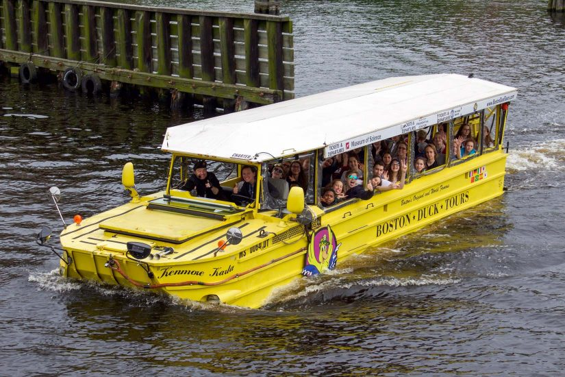

<div class="rightpanel textpanel">

<h1>Travel + Accommodation</h1>

<h2>Getting here</h2>

<p class="details">If you're on the east coast, the most pleasant way to get to
Boston is to take a <b>train to South Station</b>. But if you're coming from far
away, or in a hurry, <b>Logan Airport</b> is also close by. From the airport to
our neighborhood, expect to pay $30&ndash;50 (including tip); airport cabs are
sometimes cheaper and faster than Lyft/Uber. You can also take the subway, but
it's either requires a bus &rarr; subway &rarr; bus transfer or a 20-minute walk
to get to the hotel or venue.</p>

<h2>Getting around</h2>

<p class="details">
Once you're here, you can take the bus or subway ("the T"). Both now accept
contactless payment, so you don't need to buy a ticket at the airport. Ubers
and Lyfts are also pretty easy to find. Boston is also small, and you may often
find that walking or taking a Blue bike is the easiest way to get where you're
going.
</p>

<h2>Where to stay</h2>

<p class="details">
    We've reserved a block of rooms at <a
    href="https://cambriasomerville.com/">The Cambria Hotel</a> (around the
    block from our apartment, and about half a mile from the venue). Check back
    soon for a booking link! We've also heard good things about the <a
    href="https://www.theportersquarehotel.com/">Porter Square Hotel</a>, and
    there are many other hotels near Harvard Square and Kendall Square.
</p>

</div>


